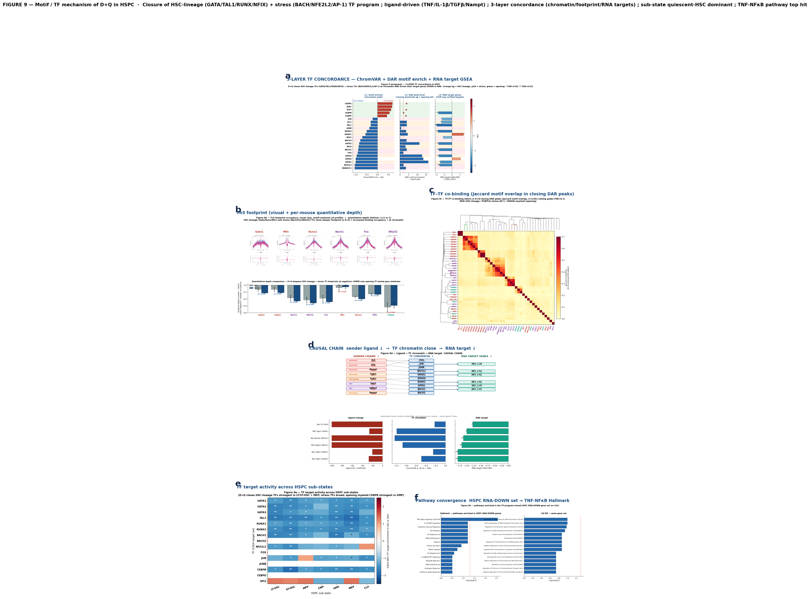
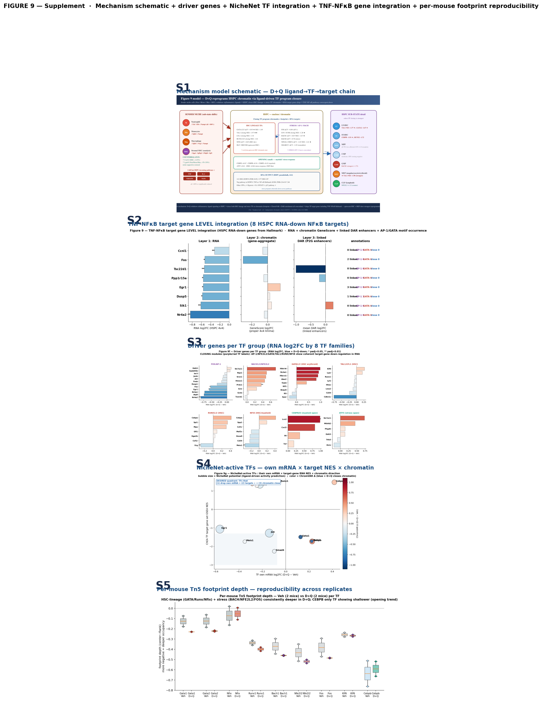

Figure 9 — Motif / TF mechanism of D+Q in HSPC
Independent chromatin cohort + 4v4 RNA cohort converge on TF-program closure · Cho / Varghese Lab v11 · 2026-05-28
One-line conclusion:
D+Q withdraws pro-inflammatory ligands (TNF/IL-1β/TGFβ/Nampt) from HSPC; the receiver HSPC closes both HSC-lineage (GATA / TAL1 / RUNX / NFIX) and stress (BACH / NFE2L2 / AP-1) TF programs at chromatin, footprint and RNA-target levels (3-layer concordance); TNF-NF-κB is the top convergent Hallmark pathway.
1. Mechanism model
See: interactive schematic
2. Main Figure 9 (6 panels)

Panel-by-panel
- a — 3-LAYER TF concordance: 23 TFs analyzed; 11 fully concordant (ChromVAR Δ + DAR motif enrich + RNA target NES all same direction).
- b — Tn5 footprint (visual + quantitative): HSC-lineage + stress TFs deepen in D+Q; CEBPB shallower (opening).
- c — TF-TF co-binding: Real motif overlap in 2,823 D+Q-closing DAR peaks; 4 modules (GATA / BACH-AP1 / RUNX-TAL1 / CEBP-myeloid).
- d — Causal chain: 11 ligand-TF pairs; CellChat ligand Δ% + ChromVAR Δ + RNA NES on shared y-axis.
- e — Sub-state TF trajectory: LT-HSC + MEP show strongest TF closing.
- f (h) — Pathway convergence: HSPC RNA-DOWN gene set → TNF-α via NF-κB Hallmark #1 (FDR = 2.8×10⁻³, 8/200 overlap).
3. Key concordant TFs (3-layer match)
| TF | ChromVAR Δ | DAR closing –log10p | RNA target NES | RNA target FDR |
|---|
| TAL1 | −0.31 | 3.9 | −1.97 | 1.7×10⁻⁴ ★★ |
| RUNX2 | −0.49 | 3.5 | −1.81 | 1.3×10⁻³ ★★ |
| GATA2 | −0.83 | 11.1 | −1.72 | 2.7×10⁻³ ★★ |
| GATA3 | −0.95 | 12.7 | −1.68 | 3.4×10⁻³ ★★ |
| BACH1 | −0.87 | 3.8 | −1.67 | 3.6×10⁻³ ★★ |
| NFE2L2 (NRF2) | −1.03 | 2.0 | −1.61 | 5.6×10⁻³ ★★ |
| GATA1 | −0.99 | 16.2 | −1.49 | 1.1×10⁻² ★ |
| LYL1 | −0.31 | 3.9 | −1.34 | 2.7×10⁻² ★ |
| JUN (AP-1) | −0.22 | — | −1.28 | 3.8×10⁻² ★ |
| CEBPB (uncoupled) | +0.54 | open 2.1 | −1.73 | 2.4×10⁻³ |
4. Top ligand→TF→target pairs
| Sender | Ligand (Δ%) | TF | Chromatin Δ | RNA target NES |
|---|
| Neutrophil | TNF (−100%) | JUN/AP-1 | −0.22 | −1.28 ★ |
| Neutrophil | Nampt (−100%) | NFE2L2/NRF2 | −1.03 | −1.61 ★★ |
| Macrophage | Tgfb1 (−27%) | RUNX2 | −0.49 | −1.81 ★★ |
| Monocytes | Tgfb1 (−20%) | SMAD1 | −0.25 | −1.81 ★★ |
| MSC | Spp1 (−26%) | GATA1 | −0.99 | −1.49 ★ |
| MSC | Igfbp3 (−100%) | BACH1 | −0.87 | −1.67 ★★ |
5. Supplementary panels

Limits
- TF footprint n=2 vs 2 — directional consistent but underpowered (p>0.1)
- RUNX1 RNA target direction depends on ChIP-seq dataset (HSC vs leukemia)
- HSPC sub-state analysis uses RNA pseudobulk per sub-state (4v4)
- P2G correlations are cross-cell-state; D+Q-specific causality requires multiome
Cho · Varghese Lab · G11BM D+Q senolytic v11 · Nature Aging target